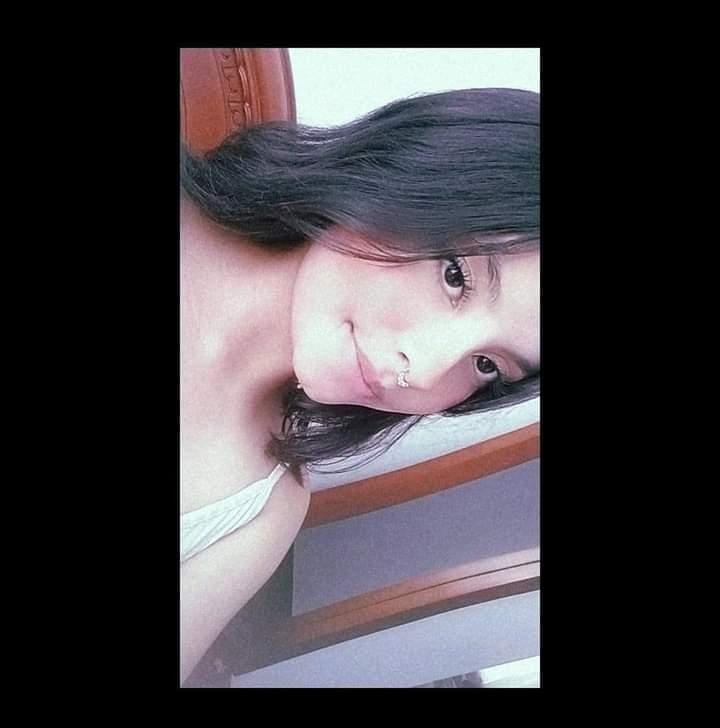
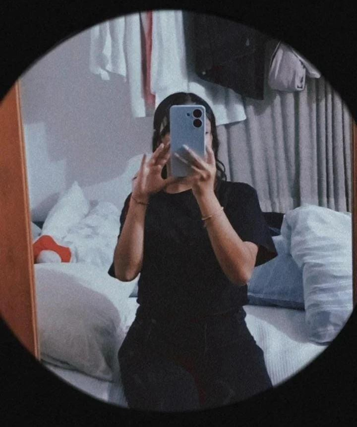

Holaaaaa mi maite bella, te hice esta pagina para felicitarte por tu cumpleaños y queria darte algo unico y especial para que lo recuerdes durante mucho tiempo


solo me gustaria decirte que eres una gran amiga, sabes que cuentas conmigo siempre, ante cualquier evento puedes buscar mi apoyo, este año te voy a extrañar mucho, aunque algunos dias vaya a visitarte.
Si te agobia el mundo, dame un beso para yo perder el mío, si te aterra el futuro, tómame de la mano y veras como se me pierde el presente.
Si sientes nervios mirame a los ojos y verás como se me sube la birilubina.
Se te pierde el camino?, solo llamame y me perderé entre el norte de tu sonrisa.
Si quieres escapar: perderte del mundo. mientras yo solo quiero perderme en tu mundo, mientras te estresas por las materias, mi mayor preocupación es imaginar el sabor de tus labios
Mientras tu intentas resolver ese problema matemático, yo intento sacarme un doctorado en dibujo para dibujar tu figura.
Si le tienes miedo. Yo haré que pierdas el mundo, que se te escape el futuro, que tus sentimientos se aterren; que busques la brújula de mis ojos, desestresarte con un beso sabor a café.
Soy el silencio de tu soledad, la sombra que te espera desde la oscuridad, soy el susurro que viaja entre el viento que te habla al oído.
Tu mi sol nocturno, tu silueta lo que se sueña despierto, tu tacto el mas bello destello, por tu piel cien años de castigo.
No todo se aprende en un libro, pero si quiero entender el lenguaje de tu piel, el libro de tu sangre, aprobar el examen de tu corazón.
Que mi corazón a lo días escribirá la bitácora, profetara la constelación que se esconde en tus ojos, dejame parafrasear entre tus labios, cantar la canción de tus besos; armonizar en tus abrazos.
Que entre las líneas de mi verso tu miedo
vaya desaparaciendo, entre acorde pueda
Eliminar todas tus inseguridades.
Te espero como el sol espera al anochecer, te necesito como la flores al agua, que mi poesía seguirá tu camino aunque se pierda en los senderos de tu alma.
Muero. Muero entre la distancia de tus labios y los míos, Muero entre el silencio tan doloroso, como un puñal sobre mi espalda.
Muero con la incertidumbre de este verso, la duda de tus brazos; Muero por lo ajeno y por lo propio, Muero con cada amante que en sus ojos no te encuentro; como una muerte ya hace mucho anunciada, escrita en las estrellas.
En la constelación de mi horóscopo se marca el río de sangre proveniente de mis lágrimas, Muero en cada noche fría y cada noche aun más fría.
Me mata la cabeza porque el corazón hace mucho fue asesinado, un tiro de gracia, sobre lo más preciado, un funeral en silencio.
Muero con la idea de verte, de abrazarte, y moriré completamente el día que cumple tus labios, mi cementerio será lo mas exuberante de tu cuerpo, moriré cuando mis manos prueben el paraíso, para por fin ir a descansar en el infierno de tus ojos...